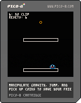
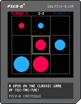

Video Games
Please enjoy my bespoke, artisinal, handcrafted video games.
Click the images to play!
Slime Tilt

Slime Game
Slime Tilt is a fast-paced challenge platformer where you rotate the level itself to gain speed.
Pick up all gold coins while avoiding the lava to pass to the next level. Also you play as an adorably soft slime.
Created in Pico-8.
Tic Tac Go!

Tic Tac Go
Tic Tac Go! is a spin on the classic game of Tic-Tac-Toe, but the tokens disappear after three turns.
You need to out-manoeuvre your opponent and keep track of which space will clear for you to launch your attack. Created in Pico-8.
Last edited 04/06/2023